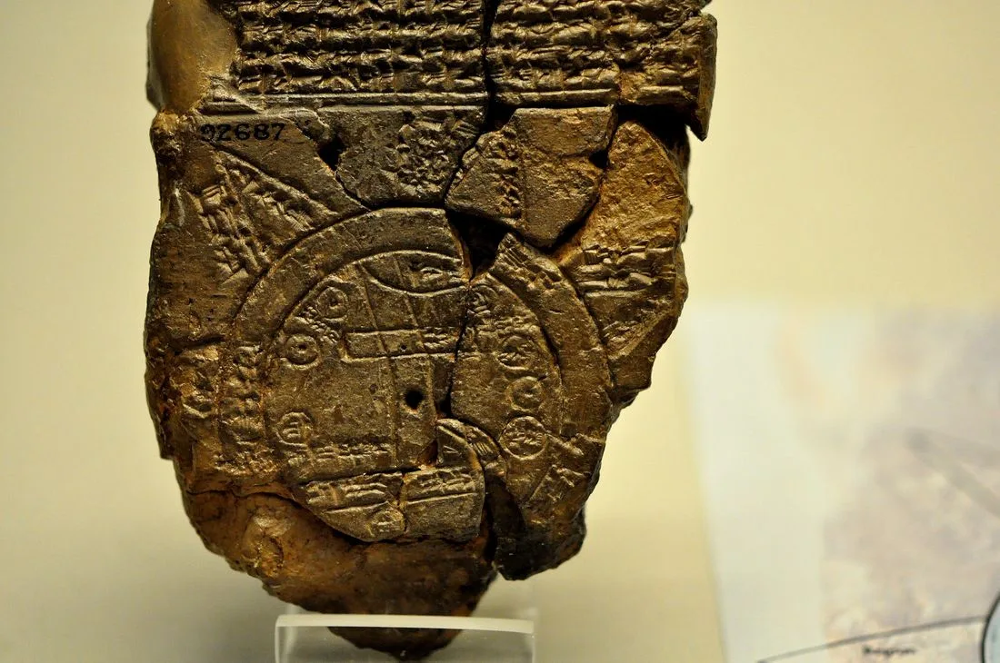
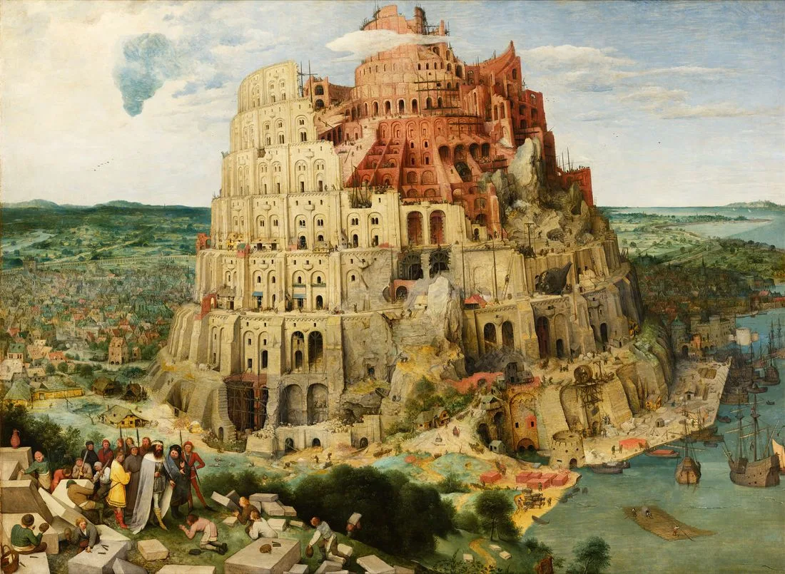
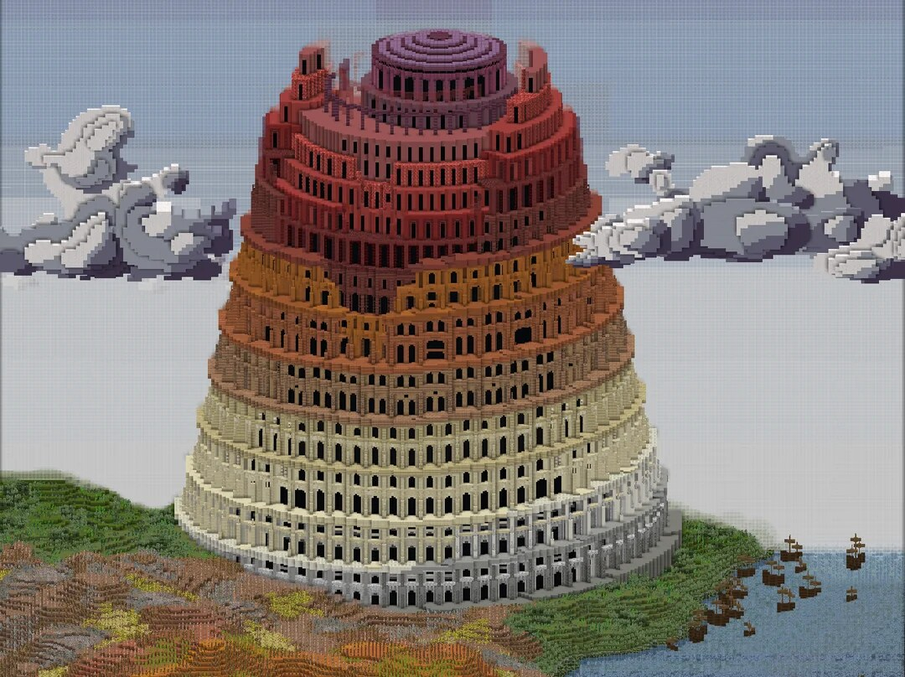

After the flood, one family repopulates the whole earth. Genesis 10 names seventy clans descended from Noah's three sons — Shem, Ham, and Japheth — mapping every nation Israel knew back to a single common ancestor.
Genesis 10:1–32
Why does the Bible include a genealogy like this?
Genesis 10 opens with a phrase that structures the whole book: "These are the generations of the sons of Noah." That phrase — toledot in Hebrew, meaning "generations" or "account" — marks a new section eleven times across Genesis. This particular toledot is nicknamed the Table of Nations: a genealogy that doubles as a map of the ancient world as Israel understood it.
It isn't a modern census. Some "sons" are individuals; others are entire peoples or cities listed as if they were a single ancestor's child. The point isn't biological precision — it's a theological claim that was radical in the ancient world: every nation on earth, friend or enemy, shares one family tree. Neighboring origin stories often had different peoples made from different substances by different gods. Genesis says otherwise: one flood, one family, one human race.
3sons of Noah: Shem, Ham & Japheth
70clans/nations named in total
1human family the whole table traces to
Explore the family tree
Click any name to see where that people group traditionally settled and why it matters. Names marked ★ get a closer look below.
Noahsurvived the flood with his wife, three sons, and their wives (Genesis 7:13)
Japheth — north & west Ham — south & the Levant Shem — east & the line to Abraham
Click a name above to read about that people group.
A schematic map: where did they go?
This diagram isn't a literal map — it's a schematic showing the general direction each branch spread from the mountains of Ararat, where the ark came to rest (Genesis 8:4).
Ararat Noah's family disembarks
Japheth
North and west into Anatolia, the Aegean, and the steppes beyond the Black and Caspian seas — ancestors of the Greeks, Medes, and peoples of Asia Minor and Europe.
Shem
East and south into Mesopotamia and Arabia — Elam, Assyria, Aram, and the branch that leads through Eber to Abraham.
Ham
South and west into Egypt, Cush (Nubia), Libya, and Canaan — plus Nimrod's kingdom, founded in the heart of Shem's later territory, Mesopotamia.
Notice Ham's arrow crossing into Mesopotamia — that's not a mistake. Genesis 10 tracks political power and settlement, not just bloodline, and it's about to matter a lot in chapter 11.

Archaeology · British MuseumThe oldest map of the world · The Babylonian Imago Mundi (c. 6th century BCE). Excavated at Sippar in modern Iraq, this cuneiform clay tablet (BM 92687) is the oldest known world map in human history. It depicts a circular world centered upon the Euphrates River and Babylon, bounded by the Bitter River (mar-ratu), beyond which lie mythical triangular outer regions (nagû). Contrast this Mesopotamian imperial cosmology—which places Babylon at the exact geometric navel of the earth—with Genesis 10: rather than making one imperial capital the center, the biblical text maps seventy dispersed linguistic and territorial families, emphasizing that all human peoples across the known world share descent from one common creator and one human father.
The Babylonian Map of the World (BM 92687), clay cuneiform tablet, British Museum, London. Photo via Wikimedia Commons · Source and record · Public domain.
Four things worth a closer look
★ Nimrod: a Hamite king in Shem's territory
Cush is generally identified with Nubia, far up the Nile — yet his son Nimrod becomes "a mighty hunter" who builds an empire starting with Babel, Erech, Accad, and Calneh in Shinar (Babylon), then pushes into Assyria to found Nineveh (Genesis 10:8–12). That's the same territory Shem's son Asshur is named for. Genesis 10 is telling you who controls the land, not just who descended from whom — and it's dropping the word Babel right before chapter 11 tells that city's whole story.
★ Everyone already has "their own language" — before Babel
Three times this chapter says the nations spread out "each with his own language" (10:5, 10:20, 10:31) — but Genesis 11 opens by saying "the whole earth had one language." Chapter 10 gives the finished picture; chapter 11 rewinds to explain how it happened. Genesis often summarizes first and flashes back second — watch for this pattern in other places you read the book.
★ Canaan's clans: the people already living in the promised land
Canaan's eleven clans — including the Jebusites (later Jerusalem), Amorites, and Hivites — are the very peoples Abraham's descendants will encounter when they enter the land God promises them. Genesis 10 quietly sets the table for the rest of the Old Testament's central conflict.
★ Eber, Peleg, and the road to Abraham
Shem's line is traced with unusual care: Arpachshad → Shelah → Eber → Peleg. The name "Hebrew" comes from Eber. Peleg's brother Joktan fathers thirteen Arabian tribes, but the text keeps following Peleg's branch — because Genesis 11's genealogy picks up right there and walks in a straight line to Abram in Genesis 12. Of all seventy nations, the narrative camera follows one single thread.

Art History · Kunsthistorisches Museum, ViennaNimrod's imperial city · Pieter Bruegel the Elder (1563). In Genesis 10:8–10, the genealogy pauses to highlight Nimrod: “the beginning of his kingdom was Babel, Erech, Accad, and Calneh, in the land of Shinar.” Bruegel translates this transition into a colossal spiraling ziggurat modeled on the Roman Colosseum, symbolizing imperial ambition rising against the heavens. In the lower left, King Nimrod arrives with royal courtiers as stonemasons bow in homage. Notice how the tower is already subtly listing and crumbling even as it is being built: how does Bruegel’s canvas capture the inevitable collapse of human empire described in Genesis 11:1–9?
Pieter Bruegel the Elder, The Tower of Babel, 1563, oil on oak panel, 114 × 155 cm. Kunsthistorisches Museum, Vienna (GG 1026) · Museum record · Public domain.

Student Showcase Model · ClassroomOS. A student-built voxel reconstruction of the Tower of Babel from the Showcase. Genesis 11 — the very next chapter — explains why Nimrod's city of Babel, mentioned in today's genealogy, becomes the place where human languages are scattered across the seventy nations.
Why seventy?
Ancient readers treated seventy as a number of completeness. The Table of Nations totals seventy clans (14 through Japheth, 30 through Ham, 26 through Shem), and that number echoes later in Scripture: Jacob's household enters Egypt as "seventy persons" (Exodus 1:5), and Jesus later sends out seventy (or seventy-two, in some manuscripts) disciples to go ahead of him (Luke 10:1) — a symbolic sign that the good news is for all seventy nations, not just Israel. Genesis 10 sets up the scope of the promise God makes to Abraham just two chapters later: "in you all the families of the earth shall be blessed" (Genesis 12:3).
Reflection questions
Why might it matter, theologically, that Genesis traces every nation on earth back to one shared family rather than giving each people group a separate origin?
What do you make of Nimrod — a descendant of Ham — founding cities in territory later named for Shem's son Asshur? What does that tell you about what this genealogy is tracking?
Genesis 10 says the nations already spoke different languages before Genesis 11 explains how that happened. What does that tell you about how Genesis tells stories?
Of the seventy nations named here, the text narrows in on one branch — Shem, then Eber, then Peleg — leading to Abraham. Why do you think the story needs all seventy first?